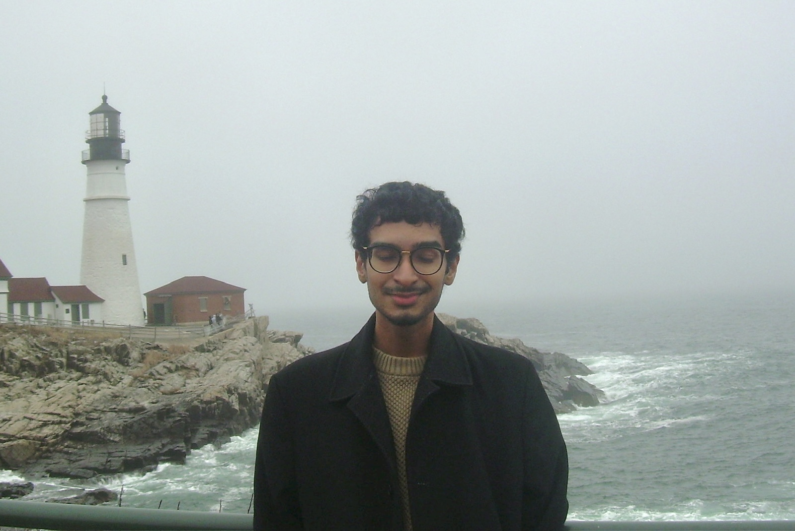

Ryan R. Rajpal
Hello, I am a researcher interested in people, specifically what influences their opinions and behaviors, and their relationship with external factors like media and environment. My previous work investigates associations between political social media, attitudes, behavior, and affective polarization. My current work at the PPL Institute investigates public opinion. If you are interested in my academic background, feel free to download my CV .In addition to research, I bartend professionally from an appreciation for mixology. Drawn to sour, punchy drinks, my personal favorite is currently a midori sour. For my full drink menu, please visit the bartending page.
Contact: rrr116@scarletmail.rutgers.edu